Views Engineer › 作品一覧
作品一覧 ぜんぶ無料・登録なし。絵つきの作品 45点、研究ノート 18本、作り方 20本
遊ぶ — 無料のブラウザゲーム
登録もインストールもいりません。PC でもスマホでも、開いたらすぐ遊べます。
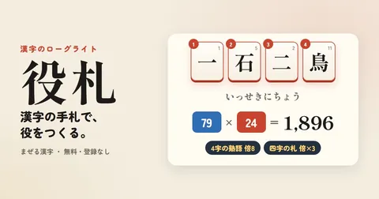
NEW毎日漢字のローグライト役札 — まぜる漢字手札の漢字で熟語をつくり、点×倍で目標をこえる。役札を集めて8局勝ち抜けば天下一。毎日の7字パズルも。 NEW毎日毎日1問のクイズきょうの県統計のヒントが出るたびに、合わない県が日本地図から消えていく毎日1問。当てたら思い込みチェックで、ほかの数字の順位を予想する。
NEW毎日毎日1問のクイズきょうの県統計のヒントが出るたびに、合わない県が日本地図から消えていく毎日1問。当てたら思い込みチェックで、ほかの数字の順位を予想する。
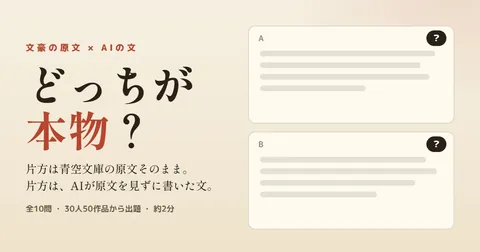
NEW文豪とAIの見分けクイズどっちが本物？片方は青空文庫の原文、片方は同じ場面をAIが原文を見ずに書いた文。10問で見分ける。答えのあとにAIの文のくせを解説。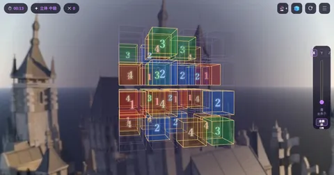
NEW毎日3Dの数独異世界立体数独 ルーン・キューブ宙に浮く魔法のキューブに属性ルーンを並べる。縦・横・奥行きの全方向で重複なしにそろえる。デイリーつき。 NEWRoblox のゲーム+1 Balloon風船だけで、宇宙まで飛ぶ。輪をくぐり、敵を撃退して、10の空の世界の先へ。プレイ動画も見られます。
NEWRoblox のゲーム+1 Balloon風船だけで、宇宙まで飛ぶ。輪をくぐり、敵を撃退して、10の空の世界の先へ。プレイ動画も見られます。
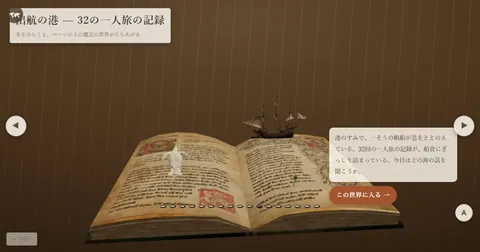
NEW毎日3Dの絵本とびだす絵本の世界ページをめくると、作品がそのまま3Dでせり上がる。日替わりで10匹のいきものが潜む。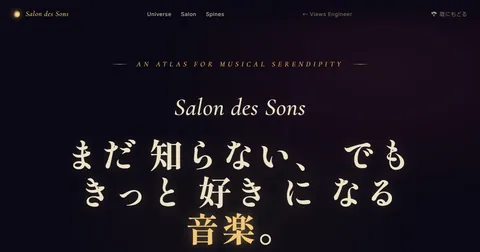
NEW音楽の地図音楽の宇宙19,810アーティストを星座のように並べた地図。好きな曲の隣で、まだ知らない音楽に出会う。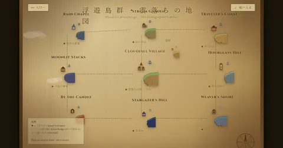
NEW箱庭の地図浮遊島群の地図羊皮紙の上に広がる九つの島を、地図としてたどる。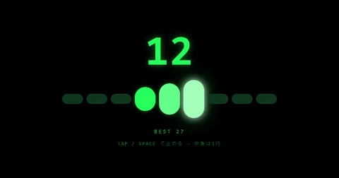
NEW10秒で遊べるSTOP — 1行ゲームタップで止めるだけ。当てるたびに的が縮む。中身はたった1行のコードです。読む — フルボイスのサウンドノベルと読みもの
30分の短編から全15話まで。ブラウザだけで、無料で最後まで読めます。
 NEW言葉で分岐するノベルゲームことつぎの星星が堕ち、言葉のかけらが浜に打ち上がる島。拾った言葉を文章の欠けへ継いで、物語そのものを書き換える。朗読ボイスつき。
NEW言葉で分岐するノベルゲームことつぎの星星が堕ち、言葉のかけらが浜に打ち上がる島。拾った言葉を文章の欠けへ継いで、物語そのものを書き換える。朗読ボイスつき。 NEWサウンドノベル・全15話正解の外側すべての正解が視える少年と、なにも覚えていない少女の物語。フルボイス・3つの結末・約3〜4時間。
NEWサウンドノベル・全15話正解の外側すべての正解が視える少年と、なにも覚えていない少女の物語。フルボイス・3つの結末・約3〜4時間。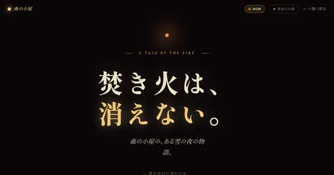
NEW短編小説焚き火は、消えない同じ雪の夜、人里離れた小屋にたどり着いた少年と少女。焚き火を挟んだ一夜と、灯守の秘密。森の小屋の物語。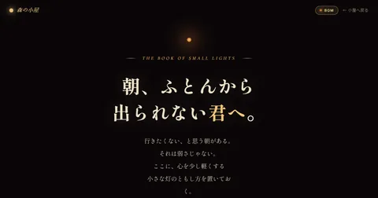
NEW心を軽くする手帖朝、ふとんから出られない君へ学校や会社に行きたくない朝のための、小さな読みもの。やさしい対処法と、本当につらいときの相談先。 NEW32の旅の記録一人旅フォトジャーナルアンコールワット、ペトラ、ハロン湾、別府、屋久島。ひとりで歩いて撮りためた写真と言葉の記録。使う — 無料の道具と、ひとりの時間の場所
地図、計算機、引っ越しの道具、静かな場所。入力はどこにも送らないものを中心に。
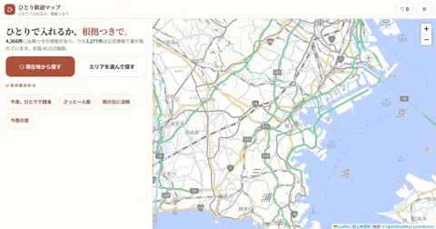
NEW一人で行ける店の地図ひとり歓迎マップ「ひとりで入れるか」だけを見る地図。いま開いている店を現在地の近い順に。席・支払い・静けさを、公式ページの引用つきで。 NEW無料の引っ越し道具Ameba Ownd の写真を、消さずに引っ越す2027年3月31日に終わる Ameba Ownd。書き出しの zip を入れると、写真をぜんぶ保存し、無料で公開できるホームページ一式を作ります。
NEW無料の引っ越し道具Ameba Ownd の写真を、消さずに引っ越す2027年3月31日に終わる Ameba Ownd。書き出しの zip を入れると、写真をぜんぶ保存し、無料で公開できるホームページ一式を作ります。
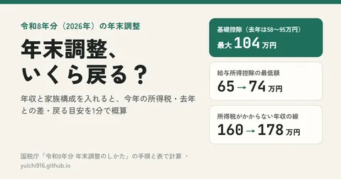
NEW令和8年分の計算機2026年の年末調整、いくら戻る？年収と家族を入れると、今年の所得税、去年との差、12月に戻る目安を、国税庁の資料どおりの手順で概算します。 NEW個人情報を伏せ字に伏せる — AIに貼る前に名前・電話・住所・マイナンバーなどを、ブラウザの中だけで伏せ字に。入力はどこにも送りません。AIの返事は元の名前に戻せます。
NEW個人情報を伏せ字に伏せる — AIに貼る前に名前・電話・住所・マイナンバーなどを、ブラウザの中だけで伏せ字に。入力はどこにも送りません。AIの返事は元の名前に戻せます。
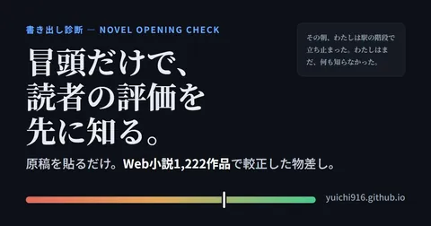
NEW小説の冒頭を測る書き出し診断冒頭を貼るだけ。Web小説1,222作品の読者評価で較正した物差しが、書き出しの位置と直せる癖を返します。原稿は送信されません。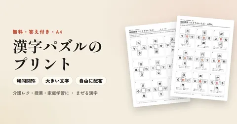
NEW小学1〜6年・答え付き無料の漢字パズルプリント熟語の穴うめ「和同開珎」と「7字でつくる」を、学年・むずかしさ・問題数を選んで何枚でも。授業、家庭学習、レクリエーションに。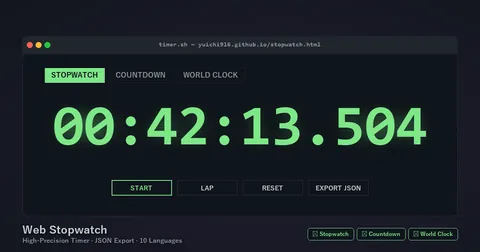
NEW時計・タイマーストップウォッチミリ秒精度のラップ、カウントダウン、世界時計。10言語対応。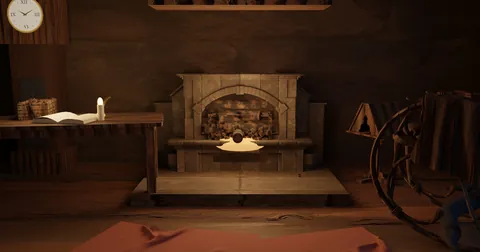
NEW360°の瞑想空間森の小屋雨の森に一つだけ灯りのともる小屋。タイマー、呼吸のガイド、雨音と焚き火。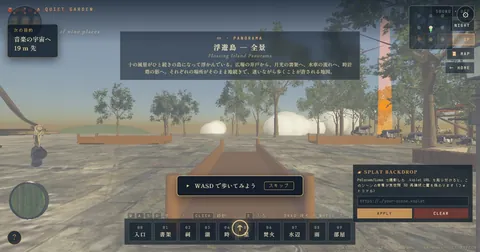
NEW3Dの箱庭浮遊島を歩くひと続きの3D世界を散策する。目的のない時間のための場所。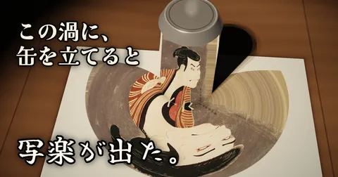
NEWA4で印刷して試す缶に映すと写楽が出る模様ぐにゃりと伸びた模様に、鏡を巻いた缶を立てると写楽が映る。そうなるように計算した模様です。学ぶ — 動画とクイズで学び直す
つまずく所を1つずつ。数学の難問、防災の数字、英語を、動画と問題で。
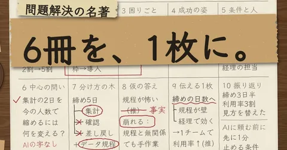
NEW問題解決の名著6冊を1つの型に問題の1枚名著6冊を突き合わせ、組み合わせた型を A3 の紙1枚に。書き込み用と見本の無料 PDF と、40分の解説動画。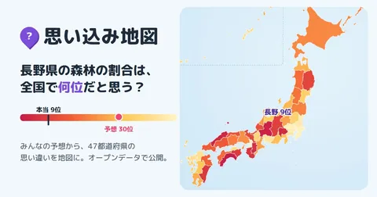
NEW都道府県の統計の思い違いみんなの思い込み地図「長野県の空き家の割合は何位？」みんなの予想から、47都道府県の思い違いを地図に。予想の全件をオープンデータで公開。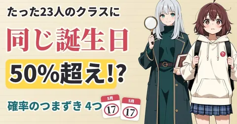
NEW動画シリーズつまずき図鑑人がつまずく所を、1つずつ標本にして動画に。確率と実験の数字は全部コードで検算し、そのコードも公開しています。 NEW東大2026 数学 全6問難問ほどき99%の人がわからない問題を、99%の人がわかるように。東大入試の難問を、最初の一手からほどく動画シリーズ。
NEW東大2026 数学 全6問難問ほどき99%の人がわからない問題を、99%の人がわかるように。東大入試の難問を、最初の一手からほどく動画シリーズ。
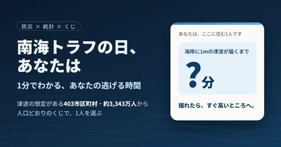
NEW防災 × 統計南海トラフの日、あなたは津波の想定がある403市区町村から、人口どおりのくじで1人を選ぶ。海岸に1mの津波が届くまで何分かを、国の数字で1分で。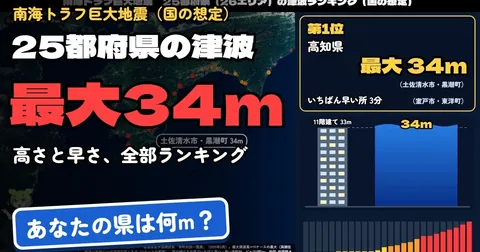
NEWYouTube の動画をシリーズ別に動画の棚「もしも」「記録で比べてみた」など、国や研究機関の数字を1分で比べる動画と、南海トラフの津波ランキング完全版。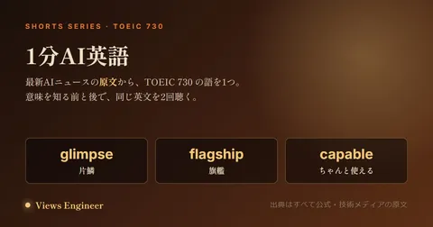
NEWニュースと論文を原文でAI英語ラボ最新のAIニュースと Nature・Science の査読付き論文を、英語の原文で読む動画シリーズ。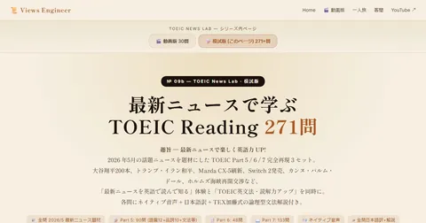
NEWPart 5・6・7TOEIC 模擬問題 271問最新ニュースを題材にした模擬問題。音声・日本語訳・解説つきで、無料で全部解けます。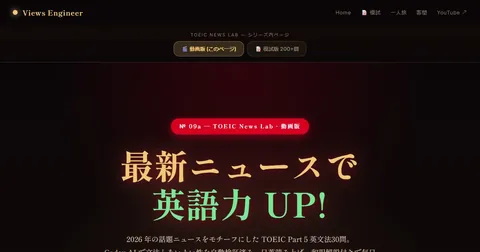
NEWPart 5 英文法30問TOEIC News最新ニュースを題材にした英文法の30問と、解説動画。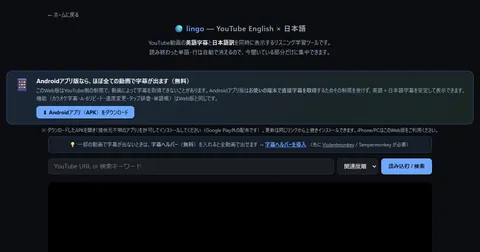
NEWYouTube で英語リスニングlingoYouTube の動画を、英語と日本語の二言語字幕で。読み終わった行が消えていくので、耳に集中できます。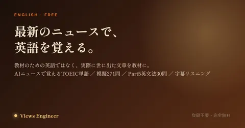
NEWまとめ英語コンテンツ一覧AIニュースの英単語、模擬問題、Part 5 動画、字幕リスニングを1ページに。 NEW解説動画のコードはじめての Roblox ゲーム作りポンプで風船を増やし、発射台で空へ飛ぶ小さなゲームを作る解説動画の、コピーできるコードのページ。研究 — データと研究ノート
計算で決めた数学の値、測って作った地図と表、AIでしか作れない形を探した記録。
 NEW数学 — 計算で決めた値未解決問題への挑戦答えの出ていなかったラムゼー数を5つ、ラドー数を2つ決めた記録。証明は検査器で検証。確かめ方と、届かなかった挑戦まで。
NEW数学 — 計算で決めた値未解決問題への挑戦答えの出ていなかったラムゼー数を5つ、ラドー数を2つ決めた記録。証明は検査器で検証。確かめ方と、届かなかった挑戦まで。 NEWAIに何ができるかの地図AIエージェント能力アトラス8領域・326の仕事を「専門家と比べてどこまでか」の6段階で色分けし、2022→2030年の時間軸で一枚に。全マスに根拠リンク。
NEWAIに何ができるかの地図AIエージェント能力アトラス8領域・326の仕事を「専門家と比べてどこまでか」の6段階で色分けし、2022→2030年の時間軸で一枚に。全マスに根拠リンク。
 NEWRTX 4070（12GB）で実測日本語ローカルLLM 実測表11モデルを同じPCで実際に動かした表。日本語は1秒に何文字出るか、成績、VRAM。推測値なし、生データ付き。
NEWRTX 4070（12GB）で実測日本語ローカルLLM 実測表11モデルを同じPCで実際に動かした表。日本語は1秒に何文字出るか、成績、VRAM。推測値なし、生データ付き。
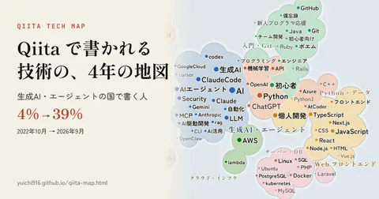
NEW4年分・105,160本のタグQiita 技術マップQiita に書かれる技術は4年でどう変わったか。AIのタグで書いた人は1.2%から34.9%に。月ごとに地図が動きます。
一覧研究ノートの一覧
A-1物語が、読者を覚えている
A-2推薦をやめて、地図にした
A-3活字を1日でフルボイスのゲームに
A-4数万件から、空白地帯を掘る
A-5AIが作ったものは、静かに壊れる
A-6作らせる前に、決めさせる
A-7テストする対象が、変わってしまった
A-8作ったものが、互いにつながっていない
A-9専門外の出力は、評価できないまま完成する
A-10自分の投稿を分析しても、伸びる型は出てこなかった
A-11今月バズるゲームの型を、市場から出して作る
B-1「ひとりで入れるか」を軸にする
B-2行かなくていい場所
C-1エージェントに任せるには、目視をやめるしかなかった
C-2発表を読んでから約1時間で、紹介動画を2本公開する
C-3動画編集ソフトはいらない。見落としは公開前に止まる
D-1「AIで新人は育たない」は半分だけ正しかった
D-1 付録AIのまちがい探し（新人編）全10問
作り方 — どう作ったか、どこで詰まったか
うまくいった手順より、詰まった所と、そこの抜け方を書いています。
総集編『正解の外側』開発技術ガイドこのサイト
物語ブラウザで動くサウンドノベルを作成した話note ↗
映像92秒のOP（できあがったもの）YouTube ↗
地図1万9千人の音楽宇宙を一人で作った話note ↗
パズル宙に浮く「立体の数独」を作ったnote ↗
基盤ポートフォリオを10カ国語化した話note ↗
解析起動1秒で落ちるアプリを、デバッガなしで直した話Qiita ↗
計測AIの「できる・できない」を、326の仕事で数えたQiita ↗
量産1本のShortsができるまでの全部Qiita ↗
発注専門外の出力は、評価できないまま完成するQiita ↗
考え方Claude Code を1ヶ月使ったら、デューイと同じ場所に着いたnote ↗
AIAIが作ったものの中身が、3分の動画で分かるようになるこのサイト
AIAIに「説明して」と頼むと長文が返ってくる。説明を動画で作らせたら、すぐ追えるようになったQiita ↗
AIAIに「説明して」と頼むと長文が返ってくる。説明を動画で作らせたら、すぐ追えるようになった（Zenn）Zenn ↗
AI“Explain This Code” Got Me a Wall of Text. So I Had the AI Make a Video Instead.Medium（英語） ↗
AIAIを「自分専用の家庭教師」にする方法note ↗
AIHDDで13年眠っていた旅行写真769枚が、語りつきの旅番組になったnote ↗
AI写真で旅する、ヨルダン・エルサレム六日間（語りつき・11分13秒）YouTube ↗
AI写真769枚だけで11分の旅番組を作る（実装の記録）Qiita ↗
AIMy Travel Photos Slept on a Hard Drive for 13 Years（英語）Medium ↗